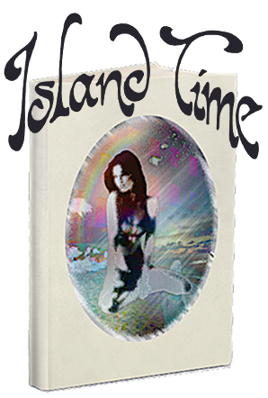

Virtual World Fanfic Novella (BUY)
interview
(Expat)
excerpt
(Forever Mag)
E-Reader Experiment (bad) (draft)
(college thesis derrida foucault deleuze)
Branded Content
(My First Poem / Mad Men)
MORE WRITING
(reviews/interviews)
~Coding as Writing
as Critique ~
oliviakansperling
gmail.com
Code Couture: On the Programming Logic of Style ~ New Models Episode 60
Theory of a Short-Wave Trend ~ Contain Podcast
"The Perfect Glove" ~ Short Story in
Heavy Traffic II
Paris Review
Madeleine Event Dispatch: Interpreting Pastry (Proust) ~ https://www.theparisreview.org/blog/2022/12/09/madeleine-event-dispatch/
No Agency (Ed. of 100) ~ Emily in Paris x Amélie Marquis de Sade Pastiche ~https://www.noagency.nyc/shop/no-erotica-2/
Valentine's Day Semiotics Card ~ Lucky Jewel (where you can also buy
Island Time
IRL)
Fabric of Reality: A Figurative Language Moodboard (Lacan) (Praxis Journal) ~ https://www.praxissociety.com/journal/fabric-of-reality-moodboard/
Dynamicland and the Whimsical Digital Object (Cabinet) ~ https://www.cabinetmagazine.org/kiosk/kan-sperling_olivia_28_august_2019.php/